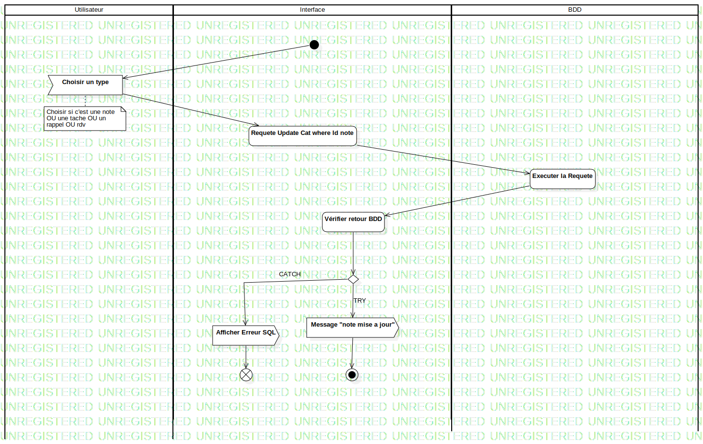

Convertir
UMLActivity
Untitled
::
Convertir
Description
none
Diagrams

Convertir V2
Groups
Utilisateur
Interface
BDD
Nodes
InitialNode1
Choisir un type
Vérifier l'existant
Requête Select all where id note
Vérifier retour BDD
Afficher un formulaire préremplie
Requete Update Cat where Id note
Executer la Requete
Vérifier retour BDD
DecisionNode1
Requete Jointe selecte all where ID note
Executer la requete
Verifier retour BDD
DecisionNode2
Afficher Erreur SQL
FlowFinalNode1
ActivityFinalNode1
Edges
Id note (Choisir un type→Vérifier l'existant)
(InitialNode1→Choisir un type)
(Vérifier l'existant→Requête Select all where id note)
(Requête Select all where id note→Executer la requete)
(Executer la requete→Vérifier retour BDD)
TRY (DecisionNode1→Requete Update Cat where Id note)
(Vérifier retour BDD→DecisionNode1)
(Requete Update Cat where Id note→Executer la Requete)
(Executer la Requete→Vérifier retour BDD)
(Vérifier retour BDD→DecisionNode1)
Try (DecisionNode1→Requete Jointe selecte all where ID note)
(Requete Jointe selecte all where ID note→Executer la requete)
(Executer la requete→Verifier retour BDD)
(Verifier retour BDD→DecisionNode2)
TRY (DecisionNode2→Message "note mise a jour")
(Message "note mise a jour"→ActivityFinalNode1)
(Choisir un type→Requete Update Cat where Id note)
TRY (DecisionNode1→Message "note mise a jour")
CATCH (DecisionNode1→Afficher Erreur SQL)
(Afficher Erreur SQL→FlowFinalNode1)
(Message "note mise a jour"→ActivityFinalNode1)
Properties
Name
Value
name
Convertir
stereotype
null
visibility
public
isReentrant
true
isReadOnly
false
isSingleExecution
false
Owned Elements
Convertir V2